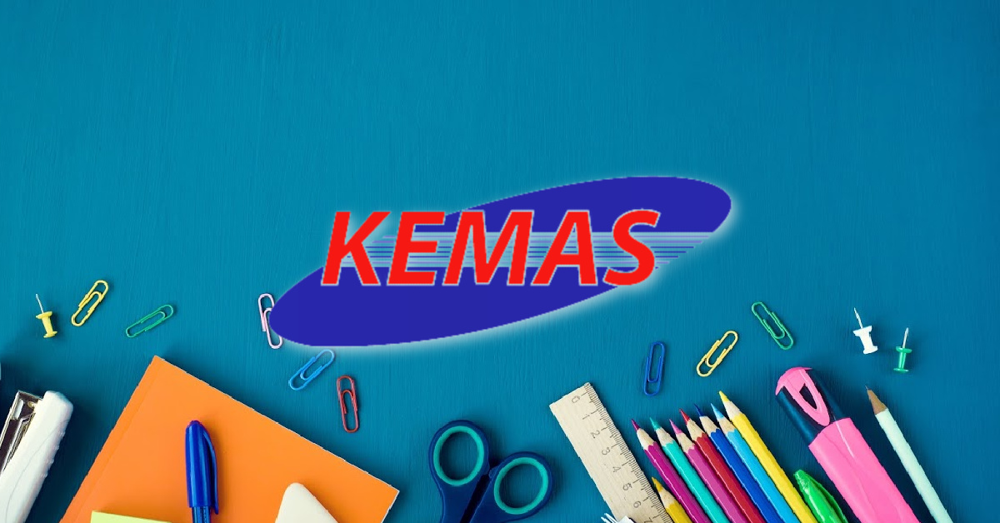

2010
I started my school at Kem UPP perlis at a kindergarten that called Tabika Kemas in the back of 2010. i started to create a beautiful memory as a kid that full of happiness there.
I started my school at Kem UPP perlis at a kindergarten that called Tabika Kemas in the back of 2010. i started to create a beautiful memory as a kid that full of happiness there.
In the back of 2011, I started my primary school era at Sekolah Rendah Islam II from standard one to standard five.
I continue my primary school studies at Sk Rantau abang from standard Five to standard. I got 5B 1C for my UPSR result.
In the back of 2017, I started my secondary school era at SMK Kompleks Rantau Abang.I create so much memories with my classmate in the secondary school. I got 3A 2B 2C 1D for my PT3 result and also I got 4A 4B 1D for my SPM result.

After I have finish my secondary school studies, I decided to pursue my studies in information management course at UiTM Machang Branch. I enjoyed a lot my diploma life with my fellows.